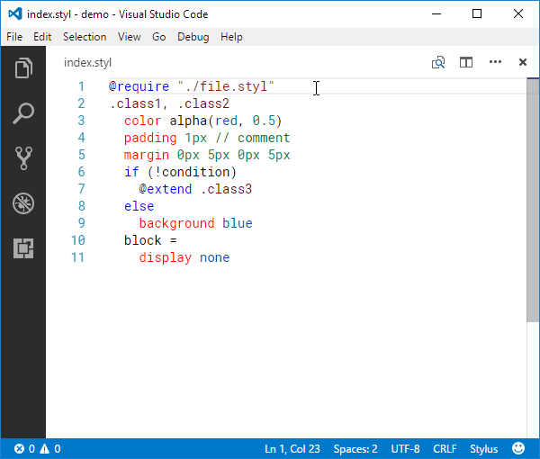

Back in the days, there was Stylint, which it helped enforcing writing rules for Stylus language, but it did not provide auto-fix capabilities. Because of that, Stylus users needed to fix those linting errors manually, which it was a time-consuming process. And also, even Stylus language has been developed for years, it lacked of a decent formatter/beautifier tool. Hence, Stylus Supremacy was born.
This software was solely developed by Anantachai Saothong (@ThisIsManta) who was working for Taskworld, as a part of internal software quality improvements. He and the company are not responsible for any complications caused by this piece of software. You must use this software at your own risk under MIT license.
Try it in your browser
You can play around with Stylus Supremacy by editing the code in the gray box, clicking the formatting options below to turn them on or off, and inspecting the output in the black box.
Some formatting options are not showing above because they are not available in this mode. Please see formatting options section for full details.
Command-line usage
First thing first, this software must be installed via NPM or something similar.
npm install --global stylus-supremacy
Now, you can run stylus-supremacy command followed by a path to your Stylus file. Normally, the formatted Stylus content will be printed to the output stream (console/terminal).
stylus-supremacy format ./path/to/your/file.styl
In case you want to format many files at a time, you can specify multiple paths, or pass the path in Glob pattern.
stylus-supremacy format ./**/*.styl
The default formatting options will be used, unless you specify your own options explicitly using --options or -p.
stylus-supremacy format ./path/to/your/file.styl --options ./path/to/your/options.json
You may redirect the formatted Stylus content to a directory by adding --outDir or -o followed by the path to a directory. This is useful when formatting multiple files.
node stylus-supremacy format ./path/to/your/file.styl --outDir ./path/to/output/directory
Alternatively, you may overwrite the original files by specifying --replace or -r parameter.
stylus-supremacy format ./path/to/your/file.styl --replace
In case you want to check whether your file is being formatted correctly, you may specify --compare or -c. If the input file does not comply with the given formatting options, the command will print out the difference and exit with a code of 1. This is useful when running in a CI environment.
stylus-supremacy format ./path/to/your/file.styl --compare
The first mismatched was at line 2.
Actual: →display none
Expect: →display: none;
^^^^^^^
Done with 1 error.
Note that --outDir, --replace, and --compare do not work together. You have to choose just one.
Other advanced parameters under format command can be viewed by specifying --help parameter.
Programming usage
Once you have Stylus Supremacy installed, you must import it to your JavaScript file and call its format function with a string of Stylus content and an optional object representing the formatting options.
const result = stylusSupremacy.format(
stylusContent, formattingOptions
)
console.log(result)
body {
display: none;
}
The format function will always return a string of the formatted Stylus content. However, it could throw an exception if there is at least one error parsing the given Stylus content or generating the formatted output.
Formatting options
The below is a JSON containing the default formatting options. The prefix stylusSupremacy. was added since version 2.4, and because of that, passing .vscode/settings.json as an argument of --options is possible, but you can omit them for backward compatibility.
Starting from version 2.11, YAML 1.2 and JSON5 are accepted as formatting option file types. If you wish to use YAML, ensure that the formatting option file has an extension of yml or yaml, otherwise JSON5 will be parsed by default.
Insert or remove a colon between a property name and its value.
true
false
.class1 { background: red; }
.class1 { background red; }
true
.class1 { background: red; }
false
.class1 { background red; }
insertSemicolons= true: boolean
Insert or remove a semi-colon after a property value, a variable declaration, a variable assignment and a mixin/function call.
true
false
.class1 { background: red; }
.class1 { background: red }
true
.class1 { background: red; }
false
.class1 { background: red }
insertBraces= true: boolean
Insert or remove a pair of curly braces where they are supposed to be. Note that this option does not affect @block construction, see alwaysUseAtBlock.
Insert a new-line around a group of CSS properties.
Unlike insertNewLineAroundBlocks and insertNewLineAroundOthers, this option cannot be set to "root" nor "nested" because CSS properties cannot be placed at the top level.
Preserve the new-lines between property values instead of flattening the lines. This also adds/keeps the colon after the property name according to Stylus syntax.
Insert or remove a white-space after an open parenthesis and before a close parenthesis.
true
false
mixin( a, b ) { margin: a b; }
mixin(a, b) { margin: a b; }
true
mixin( a, b ) { margin: a b; }
false
mixin(a, b) { margin: a b; }
insertParenthesisAfterNegation= false: boolean
Insert a pair of parentheses or a white-space after a negation operator. This does nothing if a pair of parentheses is already after the negation operator.
true
false
.class1 { top: -(10px); left: -(10px); }
.class1 { top: - 10px; left: -(10px); }
true
.class1 { top: -(10px); left: -(10px); }
false
.class1 { top: - 10px; left: -(10px); }
insertParenthesisAroundIfCondition= true: boolean
Insert a pair of parentheses around if-condition but does not remove the existing pair of parentheses.
true
false
if (a > b) { background: red; }
if a > b { background: red; }
true
if (a > b) { background: red; }
false
if a > b { background: red; }
insertNewLineBeforeElse= false: boolean
Insert or remove a new-line before else keyword.
true
false
if (a > b) { background: red; } else { background: blue; }
if (a > b) { background: red; } else { background: blue; }
true
if (a > b) { background: red; } else { background: blue; }
false
if (a > b) { background: red; } else { background: blue; }
insertLeadingZeroBeforeFraction= true: boolean
Insert or remove a zero before a number that between 1 and 0.
If the option insertNewLineBetweenSelectors is set to true, then ",\n" or "\n" will be used. Also \r\n may be used in place of \n according to newLineChar option.
","
", "
.class1,.class2 { background: red; }
.class1, .class2 { background: red; }
","
.class1,.class2 { background: red; }
", "
.class1, .class2 { background: red; }
",\n"
"\n"
.class1, .class2 { background: red; }
.class1 .class2 { background: red; }
",\n"
.class1, .class2 { background: red; }
"\n"
.class1 .class2 { background: red; }
tabStopChar= "\t": string
Represent an indentation. You may change this to any sequence of white-spaces.
This option is not available in the Visual Studio Code extension.
newLineChar= "\n": "\n" | "\r\n"
Represent a new-line character. You may want to change this to "\r\n" for Microsoft Windows.
This option is not available in the Visual Studio Code extension.
quoteChar= "'": "'" | "\""
Represent a quote character that is used to begin and terminate a string. You must choose either a single-quote or a double-quote.
This replaces the original quote characters with the given one, unless the string contains the given quote character (see font-family in .class2.) However, if the string starts with data:image/svg+xml;utf8,, the given quote character will be used, and the quote characters in the string will be escaped (see background-image in .class2.)
Can be either false for not sorting, "alphabetical" for sorting CSS properties from A to Z, "grouped" for sorting CSS properties according to Stylint and nib -- click here to show the full list of sorted properties, or an array of property names that defines the property order, for example ["color", "background", "display"].
Reduce margin and padding duplicate values by converting margin x x x x to margin x, margin x y x y to margin x y, and margin x y y y to margin x y y where x, y is a unique property value.
Do not format the files that match the given Glob patterns.
For example, ignoreFiles: ["bin/**", "src/vendors/**"]
insertNewLineAroundImports, insertNewLineAroundBlocks, insertNewLineAroundProperties and insertNewLineAroundOthers are meant to be configured together. First of all, you have to understand what is what.
An import is a @import or @require statement straightforwardly.
A block is an increased-indent or curly braces construction, such as a CSS block, a mixin declaration, a function declaration, an if-condition, an @block declaration, an @media block, and all kinds of @-rules.
A property is a CSS property, such as display: none; margin-{direction}: 0; -webkit-overflow-scrolling: touch;. A group of properties contains one or more properties writing consecutively.
Others (as in insertNewLineAroundOthers) are anything except above mentioned, such as a variable declaration, a mixin call, a for-loop and so on.
Working together, the options can only produce at most one new-line between groups. For example, there will be only one new-line between a property and a block even all options are set to true.
However, there will be no starting and trailing new-lines inside a block to prevent too many wasted space and maintain code coupling.
The followings examples demonstrate the options in action.
// In contrast to the previous example, there are no extra new-lines between class1, $hotPink and class3 because of the options.
@import 'first.styl'
.class1 {
@import 'second.styl'
If you are using Stylint as a Stylus linter and wanting to use .stylintrc file as formatting options, simply pass the .stylintrc file via --options command-line parameter.
stylus-supremacy format ./path/to/your/file.styl --options ./path/to/your/.stylintrc
The below is the default example of .stylintrc file. Note that the content of the file must be in JSON even though it does not have any file extension.
Programmatically, starting from Stylus Supremacy version 1.0, the format function does not recognize Stylint rules, but you can convert them to formatting options by calling createFormattingOptionsFromStylint function.
const result = stylusSupremacy.format(
stylusContent,
formattingOptions
)
console.log(result)
body {
display none;
}
Note that "always" in Stylint is equivalent to true; "never" is equivalent to false, otherwise the default formatting options will be used.
Stylint rules
Equivalent formatting options
blocks
alwaysUseAtBlock
brackets
insertBraces
colons
insertColons
colors
Not applicable
commaSpace
insertSpaceAfterComma
commentSpace
insertSpaceAfterComment
cssLiteral
Not applicable
depthLimit
Not applicable
duplicates
Not applicable
efficient
reduceMarginAndPaddingValues
exclude
ignoreFiles
extendPref
alwaysUseExtends
globalDupe
Not applicable
groupOutputByFile
Not applicable
indentPref
tabStopChar
leadingZero
insertLeadingZeroBeforeFraction
maxErrors
Not applicable
maxWarnings
Not applicable
mixed
Not applicable
namingConvention
Not applicable
namingConventionStrict
Not applicable
noImportant
Not applicable
none
alwaysUseNoneOverZero
parenSpace
insertSpaceInsideParenthesis
placeholders
Not applicable
prefixVarsWithDollar
Not applicable
quotePref
quoteChar
reporter
Not applicable
reporterOptions
Not applicable
semicolons
insertSemicolons
sortOrder
sortProperties, insertNewLineAroundProperties
stackedProperties
Not applicable
trailingWhitespace
Not applicable
universal
Not applicable
valid
Not applicable
zIndexNormalize
Not applicable
zeroUnits
alwaysUseZeroWithoutUnit
In addition to the table above, starting from Stylus Supremacy version 2.13, the exclusive formatting options can be passed as Stylint rules. The below illustrates how you can pass selectorSeparator, which it does not have an equivalent Stylint rule, as it was one of them. Note that the prefix stylusSupremacy. must be written always.
Stylus Supremacy is available in Visual Studio Code as an extension. To install the extension, follow the instructions below or visit Visual Studio Marketplace.

Once you have this extension installed, you can simply open a Stylus file, right click on the document editing space, then choose Format Document command. This also supports Format Section command as well. However, the cursor after using Format Section command might be displaced.
You can find Stylus Supremacy section under Visual Studio Code settings. Note that tabStopChar and newLineChar will be detected automatically based on your current active Stylus file so they are not visible in the settings. Please see formatting options section for full details.
This extension also incorporates the built-in settings: editor.formatOnType and editor.formatOnSave as long as files.autoSave is off.
In case you are using Stylint as a Stylus linter, the extension automatically searches for .stylintrc file starting from the current active file directory up to the root working directory, and merges it with the Visual Studio Code settings. The settings in Visual Studio Code will be used as a base, and overridden by .stylintrc file. Please see Stylint compatibility section for the rule conversion.
Pre-commit hook
You can use pre-commit to format your staged Stylus files before making a Git commit. The below snippet is an example of how to trigger Stylus Supremacy by creating .pre-commit-config.yaml file in your repository.